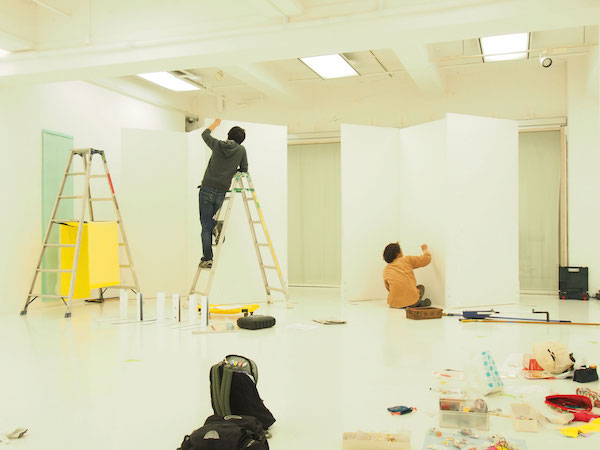
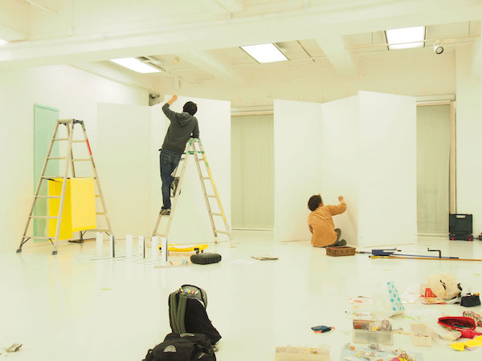

About
TETSUSONとは
分野・大学・国などのあらゆる枠を超えて集った
卒業制作の展示を行う、卒業制作合同展示会です。
企画・運営は全て全国から集まった有志の学生が行っています。
TETSUSONは2001年に発足し、今年で17年目を迎えます。
今年のTETSUSONテーマは「結ぶ」
出展者様、お客様、企業の方々、会場を貸していただける方々、
我々スタッフ等、 様々な人との出会いやつながりが TETSUSON にはあります。
そしてこの結びつきはこれから先も色々な可能性を秘めています。
TETSUSON2018 はこの大切なご縁を結ぶ場でありたい。
そんな願いを込めたテーマです。
Photo
例年のTETSUSONの様子です。
写真は随時追加します。
 
